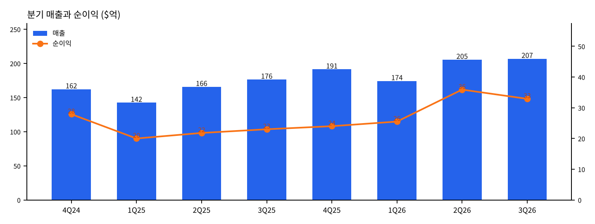
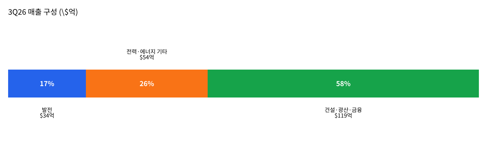
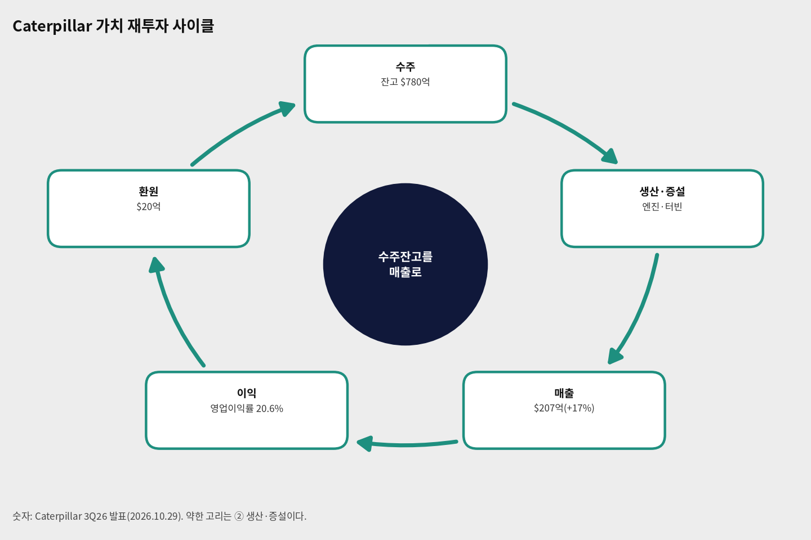

Caterpillar는 건설·광산 장비와 전력 설비(엔진·터빈)를 만드는 회사다. 데이터센터 발전 설비 수요가 수주잔고를 끌어올렸고 용량 확대가 병목이다.
| 항목 | 내용 |
|---|---|
| 종목 | Caterpillar (CAT) · NYSE · 산업재(건설·광산 장비) · 텍사스 어빙 |
| 멀티플 | PER·P/S는 08·09 항목 표 참조 |
| 최근 분기(3Q26) | 매출 $207억, 조정 EPS $7.20, 영업이익률 20.6% |
| 수주잔고 | $780억(전년의 거의 두 배) |
| 직원 수 | 약 118,000명(트레이딩뷰) |
| 직책 | 인물 | 역할·특징 |
|---|---|---|
| 회장·CEO | 조 크리드(Joe Creed) | '역대 최고 분기 매출'과 용량 확대를 강조 |
| CFO | 앤드루 본필드(Andrew Bonfield) | (확인 필요: 이번 조사에서 직접 인용 없음) |
경영 스타일: '수주잔고 전환과 용량 확대'. 대형 엔진·터빈 생산 능력을 늘려 데이터센터 수요를 소화하고, 노스캐롤라이나 새너퍼드에 $10억 소형 건설장비 공장을 짓는다.
대형 왕복 엔진·터빈으로 데이터센터 현장 발전.
발전 매출이 건설·광산 경기에 덜 흔들리게 구조를 바꾼다.
다음 실적발표는 세 가지 질문에 답하는 자리다.
1. 수주잔고 $780억이 매출로 전환되나?
2. 광산(자원 산업) 부진이 풀리나?
3. 마진이 관세·제조 원가를 견디나?
한 줄 판정 규칙: 첫 질문(수주 전환)과 둘째 질문(광산 회복)이 확인되면 약한 고리(용량·광산)가 풀린다.
일정: 4Q26 실적 발표는 트레이딩뷰 기준 2027.02.04(확인 필요). 회사는 연간 전망을 유지했다.
| 분기 | 매출 | 순이익 | EPS | 조정 EPS | 특이 사항 |
|---|---|---|---|---|---|
| 4Q24 | $162.2억 | $27.9억 | 5.78 | 5.14 | |
| 1Q25 | $142.5억 | $20.0억 | 4.20 | 4.25 | |
| 2Q25 | $165.7억 | $21.8억 | 4.62 | 4.72 | |
| 3Q25 | $176.4억 | $23.0억 | 4.89 | 4.95 | |
| 4Q25 | $191.3억 | $24.0억 | 5.12 | 5.16 | |
| 1Q26 | $174.2억 | $25.5억 | 5.47 | 5.54 | |
| 2Q26 | $205.4억 | $35.9억 | 7.77 | 8.17 | |
| 3Q26 | $206.8억 | $32.9억 | 7.13 | 7.20 | 조정 EPS $7.20(구조조정 비용 제외) |
3Q26 매출 $207억(+17%), 수정(profit per share) $7.13, 조정 $7.20(회사 발표 2026.10.29). 매출·순이익·EPS(GAAP 희석)는 트레이딩뷰 스캐너, 조정 EPS는 트레이딩뷰 실적 페이지의 Reported 값이다. 분기 정렬은 오래된 분기→최신이다.

흐름 요약: 최근 분기 매출은 $206.8억로 전년 동기 $176.4억 대비 +17.2%, 순이익은 $32.9억(전년 $23.0억)다. 최근 4분기 GAAP EPS는 $25.49, 조정 EPS는 $26.07다.
| 부문 | 내용 | 3Q26 매출 | 비고 |
|---|---|---|---|
| 전력·에너지 — 발전 | 데이터센터용 엔진·터빈 | $34.2억 | +30% |
| 전력·에너지 — 기타(내 계산) | 석유·가스, 운송 등 | $53.6억 | 전력·에너지 $87.8억 − 발전 |
| 건설·광산·금융 등(내 계산) | 건설 장비, 자원, 캣 파이낸셜 | 약 $119.2억 | 총 $207억 − 전력·에너지 |

전력·에너지가 매출의 약 42%(내 계산)이고, 그중 발전이 가장 빠르게 늘었다. 다른 부문 수치는 총액에서 뺀 값이다.
Caterpillar는 '인프라·에너지 장비를 공급해 고객의 지속 가능한 성장을 지원하는 것'을 목표로 한다.
| 축 | 내용 |
|---|---|
| 수주 | 수주잔고 $780억 |
| 용량 | 대형 엔진·터빈 증설, $10억 소형 건설장비 공장 |
| 환원 | 3Q $20억 |

| 이동평균 | 값 | 종가 대비 | 위치 |
|---|---|---|---|
| 5일선 | $581.11 | -3.8% | 종가 아래 |
| 20일선 | $620.59 | -10.0% | 종가 아래 |
| 50일선 | $725.73 | -23.0% | 종가 아래 |
| 100일선 | $795.28 | -29.7% | 종가 아래 |
| 200일선 | $805.68 | -30.6% | 종가 아래 |
52주 고가 $1,073.46(2026-06-30)·저가 $537.08(2025-11-21) 범위에서 종가 $558.77는 모든 이동평균선 아래이고.
| 규칙 | 기준 | 현재 값 | 신호 |
|---|---|---|---|
| 장기 추세 필터 | 종가 vs 200일선 | $558.77 < $805.68 | 매도 |
| 중장기 교차 | 50일선 vs 200일선 | $725.73 < $805.68 | 매도 |
| 단기 교차 | 20일선 vs 50일선 | $620.59 < $725.73 | 매도 |
| 돈키언 채널 | 55일 고가 $876.95 / 저가 $550.81 | 중간값 $713.88 아래 | 매도 |
| 1개월 모멘텀 | 21거래일 수익률 | -23.0% (기준 $725.24) | 매도 |
| 3개월 모멘텀 | 63거래일 수익률 | -31.5% (기준 $815.39) | 매도 |
| 6개월 모멘텀 | 126거래일 수익률 | -36.0% (기준 $872.56) | 매도 |
| 12개월 모멘텀 | 252거래일 수익률 | +1.2% (기준 $552.05) | 매수 |
| 종합 (8개 평균) | -0.75 | 강한 매도 |
해석: 매수 신호 1개(12개월 모멘텀), 매도 신호 7개(장기 추세 필터, 중장기 교차, 단기 교차, 돈키언 채널, 1개월 모멘텀, 3개월 모멘텀, 6개월 모멘텀). CTA 점수 -0.75(강한 매도). 14일 ATR $27.74 (5.0%), 52주 고가 $1,073.46 · 저가 $537.08.
| 가격 | 기준 | 무엇이 바뀌나 |
|---|---|---|
| $876.95 | 55일 고가 | 돌파 시 채널 상단 갱신 |
| $872.56 | 6개월 모멘텀 기준가 | 종가가 이 가격 위면 6개월 신호 매수 |
| $815.39 | 3개월 모멘텀 기준가 | 종가가 이 가격 위면 3개월 신호 매수 |
| $805.68 | 200일선 | 종가가 이 선 위/아래인지로 장기 추세 신호가 바뀜 |
| $725.24 | 1개월 모멘텀 기준가 | 종가가 이 가격 위면 1개월 신호 매수 |
| $713.88 | 돈키언 중간값 | 55일 채널 중간값 위/아래로 신호가 바뀜 |
| $552.05 | 12개월 모멘텀 기준가 | 종가가 이 가격 위면 12개월 신호 매수 |
| $550.81 | 55일 저가 | 이탈 시 채널 하단 갱신 |
가격 수준은 신호가 바뀌는 기준선일 뿐 진입·청산 가격 제안이 아니다. 20일/50일 교차는 이동평균 자체가 움직여 단일 가격으로 표시하지 않았다. 일봉·주봉은 종가 기준 직접 계산(고저 데이터 미사용)이다.
| 악재 요인 | 내용 | 강도 |
|---|---|---|
| 용량 병목 | 제조 용량이 전력 성장의 제약 | 중간 |
| 광산 지연 | 출하·시운전 지연 | 중간 |
| 관세·원가 | 제조 비용 증가 | 중간 |
| 캣 파이낸셜 | 신용손실 충당금 $3.32억(0.91%) | 참고 |
| 티커 | 회사 | PER(TTM) | PEG | P/S | EPS 성장(YoY) |
|---|---|---|---|---|---|
| CAT | Caterpillar | 21.9배 | 0.71 | 3.29배 | +31% |
| DE | 디어 | 35.8배 | – | 3.66배 | -6% |
| GE | GE | 37.9배 | 2.45 | 6.46배 | +15% |
| HON | Honeywell | 9.5배 | 0.40 | 2.08배 | +23% |
| CMI | Cummins | 17.8배 | 0.74 | 1.67배 | +24% |
비교 결론: Caterpillar PER은 디어보다 낮고 GE보다 낮은 구간이다.
Caterpillar는 3Q 영업현금흐름 $44억으로 환원 $20억을 감당한다. 현금 $79억, 재고 $222억.
| 지표 | 값 | 출처 | 해석 |
|---|---|---|---|
| 현금·단기투자 | $79억 | 트레이딩뷰 스캐너(최근 분기) | |
| 총부채 | $452억 | 트레이딩뷰 스캐너(최근 분기) | |
| 순부채(부채−현금) | $373억 | 내 계산 | 현금 대비 부채 부담 |
| 잉여현금흐름(TTM) | $96억 | 트레이딩뷰 스캐너 | |
| TTM 매출 | $778억 | 트레이딩뷰 스캐너 |
| 기준 | 매출 | P/S | 비고 |
|---|---|---|---|
| 내 계산(종가 ÷ 최근 4분기 매출 합계) | $777.7억 | 3.29배 | 시총은 정렬용 데이터에서만 사용 |
| 동종(트레이딩뷰) | – | DE 3.66배 · GE 6.46배 · HON 2.08배 · CMI 1.67배 | 11.19 |
해석: P/S 3.38배는 디어(3.66배)보다 낮다.
EBITDA는 영업활동의 현금 창출력을 보는 지표이고, PEG는 PER을 EPS 성장률로 나눈 값이다. EBITDA·FCF는 트레이딩뷰 TTM 값이다.
| 지표 | 값 | 산출 |
|---|---|---|
| EBITDA(TTM) | $173억 | 트레이딩뷰 스캐너 |
| EBITDA 마진 | 22.2% | EBITDA ÷ TTM 매출(내 계산) |
| FCF 마진 | 12.3% | FCF ÷ TTM 매출(내 계산) |
| PER(GAAP TTM) | 21.9배 | $558.77 ÷ $25.49 |
| PER(조정 TTM) | 21.4배 | $558.77 ÷ $26.07 |
| 방식 | PER | EPS 성장률 | PEG | 판정 |
|---|---|---|---|---|
| GAAP EPS (TTM $25.49) | 21.9배 | +31% ($19.49 → $25.49) | 0.71 | 투자 적격 |
| 조정 EPS (TTM $26.07) | 21.4배 | +37% ($19.06 → $26.07) | 0.58 | 투자 적격 |
판정: GAAP EPS 기준 PEG 0.71 → 1.0 이하(투자 적격) PEG 기준은 1.0 이하 투자 적격, 0.5 이하 적극 매수다. EPS 성장률은 최근 4분기 EPS 합계를 직전 4분기 합계와 비교한 값(내 계산)이고, 일회성 항목이 있으면 조정 EPS 행을 함께 본다.

Caterpillar의 사이클은 수주 → 생산·증설 → 매출 → 이익 → 환원·재투자다.
| 고리 | 현재 숫자 | 고리 강도 | 약해지는 신호 |
|---|---|---|---|
| ① 수주 | 수주잔고 $780억 | 강함 | 수주 둔화 |
| ② 생산·증설 | 대형 엔진·터빈 증설 | 진행 중 | 용량 병목 |
| ③ 매출 | $207억(+17%) | 강함 | 광산 지연 |
| ④ 이익 | 영업이익률 20.6% | 강함 | 관세·원가 |
| ⑤ 환원 | 3Q $20억 | 강함 | 투자 우선 |
사이클의 특징: 가장 약한 곳은 ② 생산·증설이다. 회사가 제조 용량을 성장의 주요 제약으로 꼽았다.